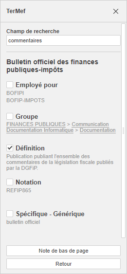

Umetanje definicija
U Document Editor-u možete koristiti dodatak TerMef za pretragu pojmova, prikaz njihovih definicija iz baze podataka i umetanje željene definicije kao završne fusnote na kraju dokumenta. Dodatak radi isključivo sa pojmovima i definicijama na francuskom jeziku. Može se instalirati putem ugrađenog Plugin Manager-a.
Počev od ONLYOFFICE Docs 8.2, nijedan dodatak ne dolazi sa editorima podrazumevano. Dodaci se instaliraju putem Plugin Manager-a.
- Izaberite pojam u dokumentu.
- Proverite željenu definiciju na panelu sa leve strane.
- Umetnite definiciju kao završnu fusnotu klikom na dugme Note de bas de page.
